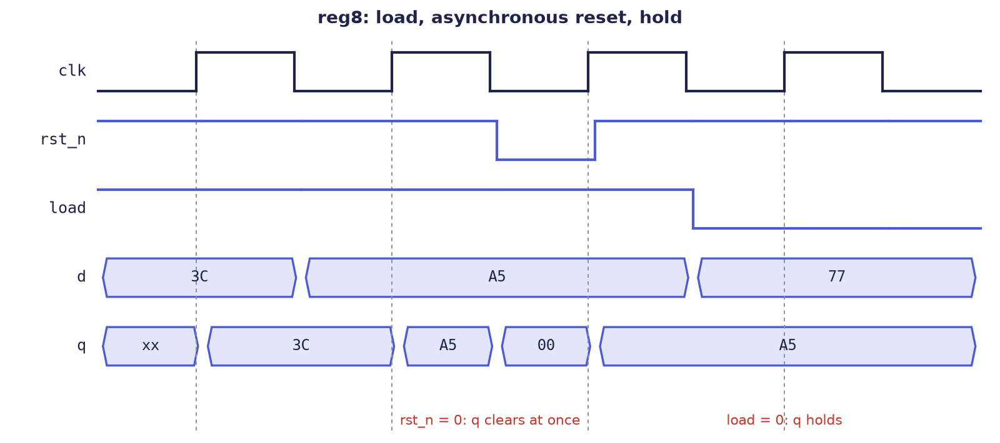
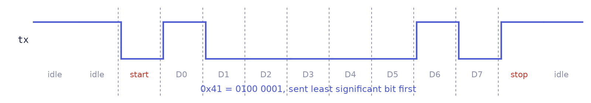
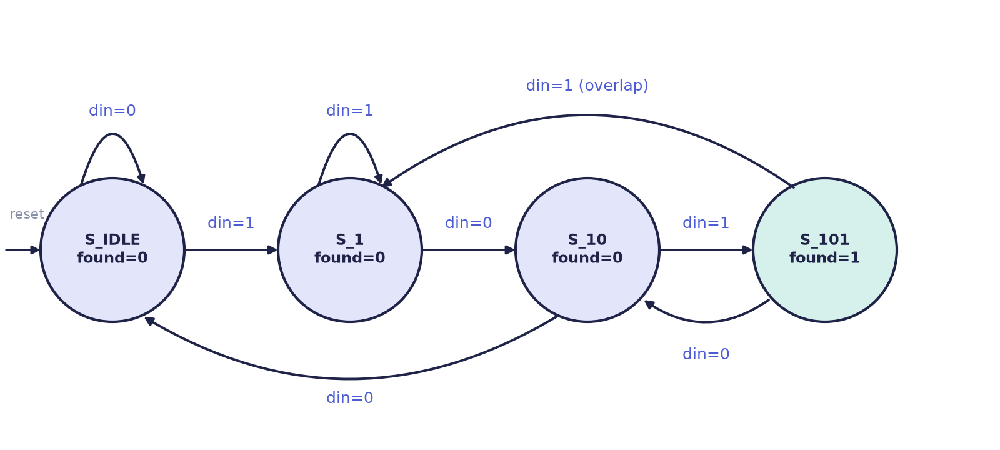
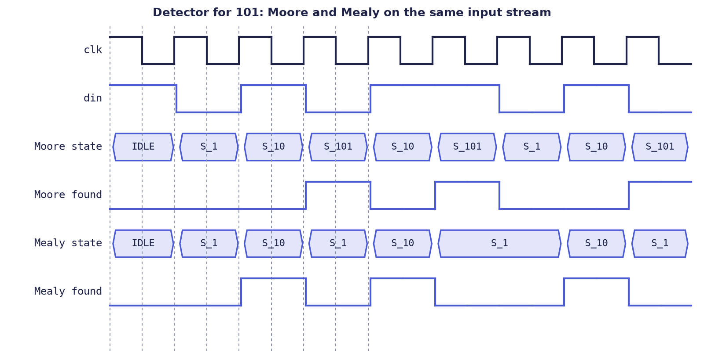

Chapter 4: Verilog: Sequential Logic and State Machines¶
Combinational logic has no memory; sequential logic does. This chapter shows how flip-flops, registers, shift registers and counters are written in Verilog, how reset works, and how to build a finite state machine with a three-block template that keeps the design readable and synthesizable. The running example is a detector for the bit pattern 1-0-1, built twice, first as a Moore machine and then as a Mealy machine, so that the difference between them can be seen in a waveform.
4.1 The flip-flop: one bit of memory¶
Sequential logic has memory: its outputs depend on what happened at earlier clock edges. The template for it is an always block triggered by a clock edge, with non-blocking assignments (Section 3.6).
module dff (
input wire clk, d,
output reg q
);
always @(posedge clk)
q <= d; // on each rising edge, q captures d
endmodule
The output q takes the value that d had at each rising edge and holds it until the next one. A short pulse on d that comes and goes between two edges is never seen by q. The physical remembering happens in the flip-flop that synthesis builds for q; any logic between flip-flops is purely combinational.
4.2 Registers with load and reset¶
A register that keeps its value unless told to load a new one is the most common sequential building block. Real designs also need a way of putting every register into a known state, a reset.
module reg8 (
input wire clk,
input wire rst_n, // active-low asynchronous reset
input wire load, // synchronous load enable
input wire [7:0] d,
output reg [7:0] q
);
always @(posedge clk or negedge rst_n) begin
if (!rst_n) q <= 8'h00; // async: acts the instant rst_n drops
else if (load) q <= d; // sync: only on a clock edge
// else: q holds its value (implied)
end
endmodule
Several points are packed into these few lines.
- The name
rst_nuses the convention_nfor "active when 0". - An asynchronous reset appears in the sensitivity list (
or negedge rst_n), so it acts the instant it arrives, without waiting for the clock. A synchronous reset is tested inside the clocked block only and takes effect at the next edge. Choose one convention per design and keep to it. - With no
else,qsimply holds. In a clocked block, that is exactly what a register with an enable does, and it does not create a latch.
Figure 4.1 shows reg8 at work. The register loads 3C and then A5 on ordinary edges. Between the second and third edges rst_n drops, and q becomes 00 at that very moment, because the reset is asynchronous. At the third edge, rst_n is back to 1 and load is 1, so q loads A5 again. At the last edge load = 0, so q keeps A5 although d has changed to 77.

4.3 Shift registers and counters¶
A shift register moves every bit one place along on each edge. This 4-bit serial-in, parallel-out register turns a stream of bits that arrive one at a time into a 4-bit word, which is how serial links receive data.
module shift_reg4 (
input wire clk,
input wire rst_n,
input wire sin, // serial input bit
output reg [3:0] q
);
always @(posedge clk or negedge rst_n) begin
if (!rst_n) q <= 4'b0000;
else q <= {q[2:0], sin}; // shift left; sin enters at bit 0
end
endmodule
The braces { , } join bits, with the first item on the left; no logic is built, only wiring (Section 5.1).
Example 4.1: filling the shift register
Start with q = 0000 and feed sin = 1, 0, 1, 1 on four successive edges. At each edge the old q[2:0] moves up one place and the new bit enters at the bottom.
| Edge | sin |
q before |
{q[2:0], sin} |
q after |
|---|---|---|---|---|
| 1 | 1 | 0000 | 000 followed by 1 |
0001 |
| 2 | 0 | 0001 | 001 followed by 0 |
0010 |
| 3 | 1 | 0010 | 010 followed by 1 |
0101 |
| 4 | 1 | 0101 | 101 followed by 1 |
1011 |
After four edges q = 1011: the first bit that arrived is now in the top position, so the stream has been assembled into a word with the earliest bit most significant.
Shift registers are the heart of serial links. A UART (the asynchronous serial port found on almost every microcontroller) sends a byte as a frame: the line rests at 1, a start bit 0 announces the frame, the eight data bits follow with the least significant first, and a stop bit 1 ends it (Figure 4.2). A transmitter is a shift register loaded with the whole frame and emptied one bit per bit-time; Exercise 4.6 asks you to build one.

The counter of Chapter 1 is now complete, with reset and wrap-around:
module counter8 (
input wire clk,
input wire rst_n,
input wire en,
output reg [7:0] count
);
always @(posedge clk or negedge rst_n) begin
if (!rst_n) count <= 8'h00;
else if (en) count <= count + 1'b1; // wraps 255 -> 0 by itself
end
endmodule
The eight flip-flops hold count; the adder is plain combinational logic between their outputs and their inputs. It is the clock edge that turns count + 1 into a counter rather than an endless loop.
4.4 Finite state machines¶
A finite state machine is the heart of almost every controller. We design the "101" detector, which receives one bit per clock on din and raises found for one cycle whenever the last three bits were 1, 0, 1. Overlaps count: the final 1 of one pattern may start the next, so the stream 1-0-1-0-1 contains two detections.
| Clock edge | 1 | 2 | 3 | 4 | 5 | 6 | 7 |
|---|---|---|---|---|---|---|---|
din |
1 | 0 | 1 | 0 | 1 | 1 | 0 |
found (ideal) |
0 | 0 | 1 | 0 | 1 | 0 | 0 |
The machine must remember enough of the past to see this. Each state records how much of the pattern has been seen so far: nothing useful (S_IDLE), a 1 (S_1), a 1 followed by a 0 (S_10), or the whole pattern (S_101). Draw the states first (Figure 4.3), then write the code.

The clean, synthesis-friendly template has three blocks: a clocked block for the state register, a combinational block for the next-state logic, and combinational logic for the outputs.
module seq_detect_101 (
input wire clk,
input wire rst_n,
input wire din, // serial data in, one bit per clock
output reg found // pulses high when 101 is detected
);
// state encoding: parameters make it readable
localparam [1:0] S_IDLE = 2'b00, // seen nothing useful
S_1 = 2'b01, // seen "1"
S_10 = 2'b10, // seen "10"
S_101 = 2'b11; // seen "101": detected
reg [1:0] state, next;
// 1) state register (sequential)
always @(posedge clk or negedge rst_n) begin
if (!rst_n) state <= S_IDLE;
else state <= next;
end
// 2) next-state logic (combinational)
always @(*) begin
next = state; // default: stay
case (state)
S_IDLE: next = din ? S_1 : S_IDLE;
S_1: next = din ? S_1 : S_10;
S_10: next = din ? S_101 : S_IDLE;
S_101: next = din ? S_1 : S_10; // overlap: this 1 starts anew
default: next = S_IDLE;
endcase
end
// 3) output logic (combinational; Moore: depends on the state only)
always @(*) begin
found = (state == S_101);
end
endmodule
The state register is the only clocked block and holds where we are. The next-state logic reads the arrows of the diagram. The output logic is combinational: here found is 1 only in S_101. Naming the state codes with localparam makes the code read like the diagram.
Example 4.2: running the detector
Feed the stream 1 0 1 0 1 1 0 1, one bit per edge, starting from S_IDLE.
| Edge | din |
State before | State after | found while in the new state |
|---|---|---|---|---|
| 1 | 1 | S_IDLE |
S_1 |
0 |
| 2 | 0 | S_1 |
S_10 |
0 |
| 3 | 1 | S_10 |
S_101 |
1 |
| 4 | 0 | S_101 |
S_10 |
0 |
| 5 | 1 | S_10 |
S_101 |
1 |
| 6 | 1 | S_101 |
S_1 |
0 |
| 7 | 0 | S_1 |
S_10 |
0 |
| 8 | 1 | S_10 |
S_101 |
1 |
Three detections, completed by the bits at edges 3, 5 and 8. The detection at edge 5 uses the 1 at edge 3 as its first bit: this is the overlap that the arrow from S_101 to S_1 (or, after a 0, to S_10) provides.
Moore and Mealy machines¶
In a Moore machine the outputs depend only on the state. The detector above is one, and its output is glitch-free and changes only at clock edges. In a Mealy machine the outputs depend on the state and the inputs, so the machine can react one cycle sooner and often needs fewer states, but a glitch on an input can reach the output. The three-block template supports both: only the output block changes.
The Mealy detector needs only three states, since it can raise found in the cycle in which the final 1 is present on din, without waiting for a fourth state:
module seq_detect_101_mealy (
input wire clk, rst_n, din,
output reg found
);
localparam [1:0] S_IDLE = 2'd0, S_1 = 2'd1, S_10 = 2'd2;
reg [1:0] state, next;
always @(posedge clk or negedge rst_n)
if (!rst_n) state <= S_IDLE;
else state <= next;
always @(*) begin
next = state; // defaults: stay, no detection
found = 1'b0;
case (state)
S_IDLE: if (din) next = S_1;
S_1: if (!din) next = S_10; // din = 1: stay in S_1
S_10: if (din) begin
found = 1'b1; // 101 completes right now
next = S_1; // this 1 may start another
end else next = S_IDLE;
default: next = S_IDLE;
endcase
end
endmodule
Figure 4.4 compares the two on the same input. The Mealy found rises while the last 1 is still on din; the Moore found follows one clock later, once the machine has moved into S_101.

4.5 Summary¶
- A flip-flop is written
always @(posedge clk) q <= d;. Everything assigned on a clock edge becomes a flip-flop; the logic between flip-flops is combinational. - A register with no assignment on some path simply holds; in a clocked block this is a register with enable, not a latch.
- An asynchronous reset is in the sensitivity list (
or negedge rst_n) and acts at once; a synchronous reset is tested inside the clocked block and acts at the next edge. - Shift registers use concatenation; counters wrap by themselves when they run out of bits.
- Build state machines with the three-block template: state register, next-state logic with a default, output logic. Name the states with
localparam. - A Moore machine's outputs follow the state; a Mealy machine's outputs also follow the inputs, so they appear one clock earlier and the machine can be smaller.
4.6 Exercises¶
Exercise 4.1 (a counter with load and enable). Write a counter with inputs clk, an asynchronous active-low rst_n, load, en and d[7:0], and output q[7:0]. The priority is reset, then load, then count. Make the width a parameter. Check by hand: after reset, enable for 10 clocks; then load 250; then enable for 10 more clocks; then hold en = 0 for three clocks. What is q after each step, and what happens at 4 bits?
Answer
module counter_ld #(parameter W = 8) (
input wire clk, rst_n, load, en,
input wire [W-1:0] d,
output reg [W-1:0] q
);
always @(posedge clk or negedge rst_n)
if (!rst_n) q <= {W{1'b0}};
else if (load) q <= d;
else if (en) q <= q + 1'b1;
endmodule
The order of the if tests gives the priority. Hand check: after 10 counts, \(q = 10\). After the load, \(q = 250\). After 10 more counts, \(250 + 10 = 260\), and \(260 \bmod 256 = 4\), since the register wraps after 255. With en = 0 for three clocks it stays at 4. At 4 bits (W = 4), ten counts from 0 give 10, and six more give \(16 \bmod 16 = 0\).
Exercise 4.2. A 4-bit shift register shift_reg4 starts at 0000. The serial input over six edges is 1, 1, 0, 0, 1, 0. Give q after each edge.
Answer
Each edge computes {q[2:0], sin}: 0001, then 0011, then 0110, then 1100, then 1001 (the old 100 followed by 1), then 0010 (the old 001 followed by 0).
Exercise 4.3. In the register of Figure 4.1, why is rst_n in the sensitivity list while load is not? What would change if the reset were synchronous?
Answer
The reset is asynchronous, so the block must wake up the moment rst_n changes, independently of the clock. load is only sampled on the clock edge, inside the clocked branch, so it needs no place in the sensitivity list. A synchronous reset would be removed from the list (always @(posedge clk)); the clear would then happen only at the next rising edge, and a reset pulse shorter than a clock period could be missed.
Exercise 4.4 (the 101 detector). (a) Run the Moore detector on the stream 1 1 0 1 0 1 1 0 1 and count the detections. (b) State when the Mealy version's output rises compared with the Moore version's, and how many states each needs.
Answer
(a) Number the bits 1 to 9: 1, 1, 0, 1, 0, 1, 1, 0, 1. The pattern 1-0-1 is completed by bits 2-3-4, by bits 4-5-6 and by bits 7-8-9, so the detections end at bits 4, 6 and 9: three in all. (b) The Moore output goes high in the cycle after the last 1 arrives. The Mealy output goes high in the same cycle as the last 1, one clock earlier. The Moore machine needs four states; the Mealy machine needs three.
Exercise 4.5. The Moore detector's S_101 state goes to S_1 on din = 1 and to S_10 on din = 0. Why not to S_IDLE in both cases? Which stream would fail?
Answer
The final 1 of a detected 101 can be the first 1 of the next pattern, and the 0 after it can continue "1-0". Sending S_101 to S_IDLE would forget that bit and miss overlapping patterns. The stream 1 0 1 0 1 would give one detection instead of two.
Exercise 4.6 (a UART transmitter). Design a block with inputs clk, rst_n, start, data[7:0] and tick (one pulse per bit time) and outputs tx and busy. On start it sends a start bit 0, the eight data bits lowest first, and a stop bit 1; the line rests at 1. Give the sequence on tx for data = 8'h41.
Answer
\(\text{0x41} = 0100\,0001\). Sent lowest bit first, the line carries, tick by tick: start 0, then bits 0 to 7 which are 1, 0, 0, 0, 0, 0, 1, 0, then stop 1. That is 0 | 1 0 0 0 0 0 1 0 | 1, ten bit times in all.
One design keeps the whole frame in a 10-bit shift register and a counter of the bits that remain:
module uart_tx (
input wire clk, rst_n,
input wire start,
input wire [7:0] data,
input wire tick, // one pulse per bit time
output reg tx,
output wire busy
);
reg [3:0] cnt; // 0 = idle, 1..10 = bits still to send
reg [9:0] frame; // {stop, data[7:0], start}, sent LSB first
assign busy = (cnt != 4'd0);
always @(posedge clk or negedge rst_n) begin
if (!rst_n) begin
tx <= 1'b1; cnt <= 4'd0; frame <= 10'h3FF;
end else if (cnt == 4'd0) begin
if (start) begin
frame <= {1'b1, data, 1'b0};
cnt <= 4'd10;
end
end else if (tick) begin
tx <= frame[0]; // next bit onto the line
frame <= {1'b1, frame[9:1]}; // shift, filling with 1
cnt <= cnt - 4'd1;
end
end
endmodule
The line stays at 1 until the first tick, when the start bit 0 is placed on it; each later tick places the next bit, the tenth being the stop bit. busy is high from the accepted start until the tenth tick. To test it, make tick a pulse every four clocks, send 8'h41, and sample tx at each tick: the sequence above must appear.